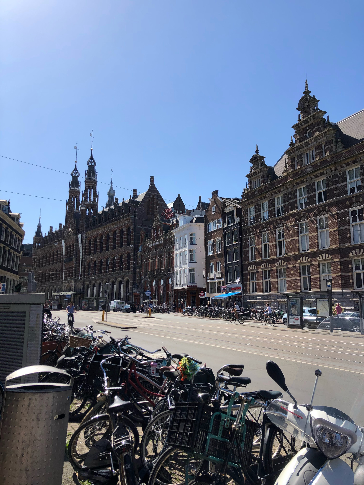
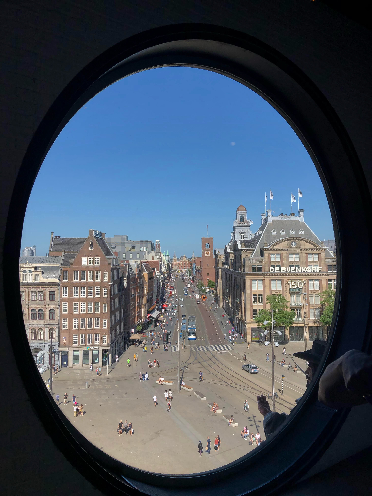

Amsterdam
🚲
Ámsterdam tiene más bicicletas que habitantes, ¡una ciudad perfecta para recorrer sobre dos ruedas!
🌍
La ciudad es famosa por sus canales, que son considerados Patrimonio de la Humanidad por la UNESCO.
🎨
El Museo Van Gogh de Ámsterdam alberga la mayor colección de obras del pintor en el mundo.
🔴
Ámsterdam es conocida por su famoso barrio rojo, símbolo de su cultura.

